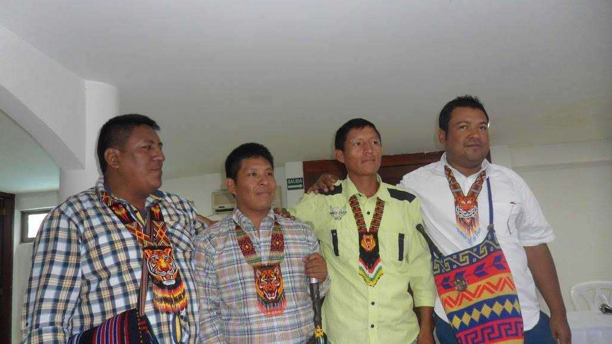

Organización social y política:
Se reconoce la figura del Cabildo como base de su organización política. Hay cabildos mayores y cabildos menores los cuales se reúnen en asambleas. Sin embargo, también se reconocen a las autoridades tradicionales como líderes que establecen formas de control social.
El pueblo Embera Chamí está representado por distintas organizaciones indígenas regionales, dependiendo de cuál sea su departamento de ubicación:
- Organización Indígena de Antioquia - OIA
- Organización Regional Indígena de Quindío - ORIQUIN
- Asociación de Cabildos Indígenas del Chocó - OREWA
- Consejo Regional Indígena de Risaralda - CRIR
- Consejo Regional Indígena de Caldas - CRIDEC
Fuente: observatorio por la autonomia y derechos de los pueblos indigenas de colombia.